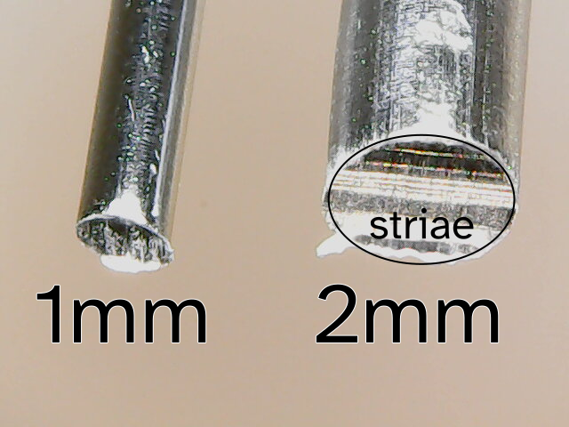
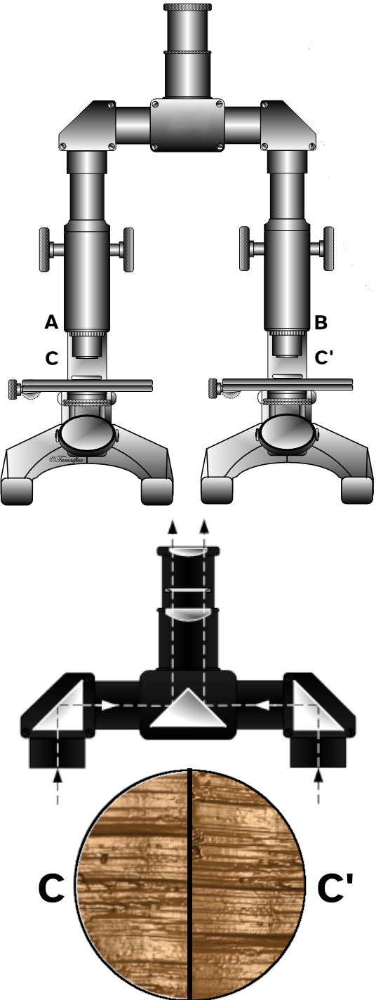

Human Computer Data Interaction
Charts, Algorithms, and Applications
February 5, 2026
🏫 Education
| 2009 | BS, Psychology & Applied Math |
| 2011 | MS, Statistics  |
| 2015 | Ph.D., Statistics Dissertation: Perception of Statistical Graphics |
💼 Career Timeline
| 2015-18 | Stat. Analyst, NE Public Power  |
| 2018-19 | Research Asst. Professor, CSAFE  |
| 2020-24 | Asst. Professor, UNL |
| 2024-26 | Assoc. Professor, UNL |


Toolmark Examination Primer

Our Crime Scene
Toolmark Examination Primer

Identifying Marks
Toolmark Examination Primer


How do we know this method is valid?
A Specific Case – Jimmy Genrich

Personal Motivation

My house has \(\approx\) 982 cm of (easily accessible) blade surface which might be used to cut wires. My dad has \(\approx\) 2243 cm of blade surface in his shop. No one in either location is a craftsperson.
Wire Cuts



Visual Examination
Test cuts made along the blade(s) of the tool
At least \(N_{ij} = b_i/d_j\) comparisons for each blade surface \(i\) and cut wire surface \(j\)
Manual alignment: estimate the minimum comparisons


Visual Examination
Adj. comparisons are non-overlapping \(\Rightarrow\) “independent”1
Algorithmic Comparison
Scans -> Cross Section -> “Signature”
(remove gross topology)

Cross-correlation is used to align signature from blade cut surface to signature from wire cut surface. Image credit: Heike Hofmann
So How Bad Is the Problem?
To keep the overall false positive rate under 10%…
![A table showing the family wise false discovery rate for N comparisons using several different estimates of striated comparison error rates. When the FDR is 7%, over 50% of 10-comparison samples would be expected to have a false positive. When the FDR is 2%, over 18% of 10-comparison samples would be expected to have a false positive. Additional columns are provided giving the expected frequency of 100 and 1000 comparisons under different error rates. The final column provides the maximum number of comparisons at the specified error rate which can be performed to keep the family wise false positive error rate under 10%.](../images/table-fpr-family.png)
2% Error -> 5 total comparisons.
Minimum of 15 required to do even a simple wire-cut analysis.
![A scatter plot showing the color index of a star on the x-axis and the absolute magnitude (brightness) of the star on the y-axis. Points are colored by spectral class, which varies from blue to white to yellow to red as the color index increases and the star's temperature decreases. Points are primarily located along a downward-sloping line from the top left to the bottom right, which is labeled the 'main sequence'. There is another set of points which diverges from the main sequence and extends out horizontally in the middle of the graph; these are labeled 'giants', and a few outliers that are above the giant cluster are labeled 'supergiants'. Below the main sequence stars, there are outliers which are labeled 'dwarfs'.](index_files/figure-revealjs/HR-diagram-1.png)
The Hertzsprung Russell diagram. Discovered independently by Ejnar Hertzsprung (1873–1967) and Henry Norris Russell (1877–1957). The diagram plots the color index of the star against the brightness (absolute magnitude) of the star. As a result, it is possible to discern that these two variables are related and change together over a star’s life cycle: a hypothesis that only came to be because of this chart.
Data from the HYG Database. Shows stars within 500 AU.
Perception
- Sensory input
- Recognition of type of chart
- Takes place very quickly - preattentively

Gestalt Grouping
- Gestalt heuristics used to group points into clusters/trends


Integration with Domain Knowledge
Begin to assign meaning to the relationship between the data and the chart labels/titles
Retrieve knowledge from long term memory and make that available in working memory

Integration with Domain Knowledge
Domain knowledge includes:
How graphs are usually structured (e.g. y-axis increases from bottom to top)
Conventions for use of filled vs. empty space
Knowledge of relationships, events, etc. that might be impactful

Figure from Padilla et al. Cognitive Research: Principles and Implications (2018) 3:29
Storytelling
Assign meaning to relationships
Fit visual statistics
Look for things that do and don’t fit a rough working hypothesis about the data

Inference
Numerical estimation from the chart with uncertainty
Visual search, followed by estimation, calculation, and inference.

Prediction and Application
Moving beyond the data shown to interpret and apply meaning
Draw conclusions
Make predictions about the future